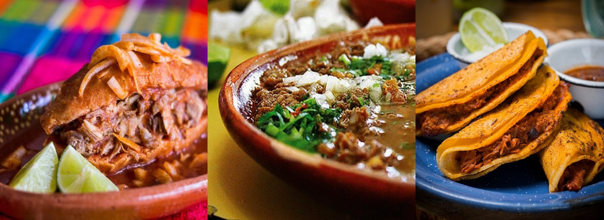

Inicio
Historia
Preparacion
Suscribete
BIENVENIDOS AL MENU JALISCO
>
INTRODUCION
BIENVENIDOS EN ESTE SITIO WEB CONOSERAS ALGUNAS DE LAS COMIDAS MAS POPULARES DEL ESTADO DE JALISCO

PODRAS CONOCER LA HISTORIA DE ESTOS ESQUISITOS PLATILLOS AL IGUAL QUE LAS PERSONAS QUE LE DIERNO VIDA A SUS CREACIONES